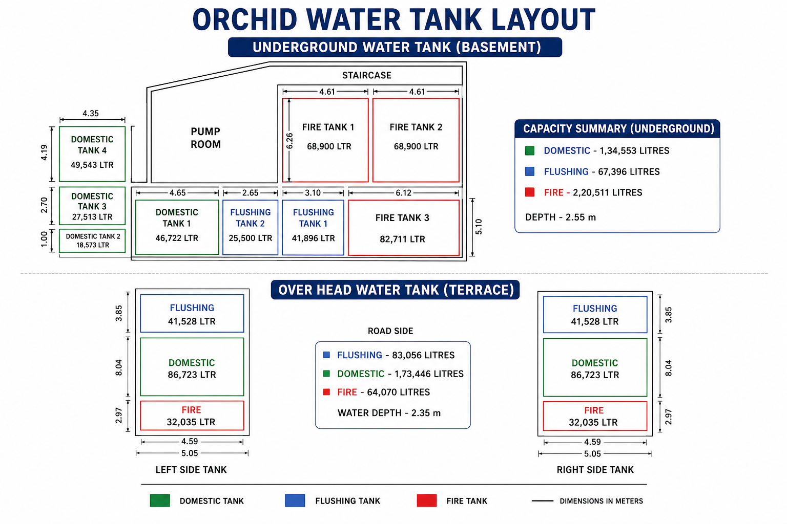

Monthly water management reports & consumption records
Reports
TMC supply, tanker top-ups, vendor breakdown & daily consumption — published every month.
Infrastructure
Underground (basement) & overhead (terrace) tank capacities for domestic, flushing and fire lines.
